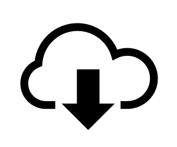

Call for Papers
Organizers
Program Committee
Program
Past workshops:
HASP 2018
HASP 2017
HASP 2016
HASP 2015
HASP 2014
HASP 2013
HASP 2012
| 8:15 - 9:00 |
ISCA Provided Breakfast |
| 9:00 - 9:10 |
Welcome Remarks |
|
Attacks and Defenses Session |
|
| 9:10 - 9:30 |
Detecting Non-Control-Flow Hijacking Attacks Using Contextual Execution Information Gildo Torres, Zhiliu Yang, Zander Blasingame, James Bruska, and Chen Liu PDF via ACM Digital Library |
| 9:30 - 9:50 |
Cracking Randomized Coalescing Techniques with An Efficient Profiling-Based Side-Channel Attack to GPU Xin Wang, and Wei Zhang PDF via ACM Digital Library |
| 9:50 - 10:10 |
CoWLight: Hardware Assisted Copy-On-Write Fault Handling for Secure Deduplication Santhosh Kumar T, Debadatta Mishra, Biswabandan Panda, and Nayan Deshmukh PDF via ACM Digital Library |
| 10:10 - 10:30 |
Position Paper: Progressive Memory Safety for WebAssembly Craig Disselkoen, John Renner, Conrad Watt, Tal Garfinkel, Amit Levy, and Deian Stefan PDF via ACM Digital Library |
|
Secure Processor Architectures Session |
|
| 10:30 - 10:50 |
EA-PLRU: Enclave-Aware Cache Replacement Atsuko Shimizu, Daniel Townley, Mohit Joshi, and Dmitry Ponomarev PDF via ACM Digital Library |
| 11:00 - 11:20 |
ISCA Coffee Break |
|
Secure Processor Architectures Session (Continued) |
|
| 11:20 - 11:40 |
Scaling Intel® Software Guard Extensions Applications with Intel® SGX Card Somnath Chakrabarti, Matthew Hoekstra, Dmitrii Kuvaiskii, and Mona Vij PDF via ACM Digital Library |
|
Security Analysis and Verification Session |
|
| 11:40 - 12:00 |
SecChisel Framework for Security Verification of Secure Processor Architectures Shuwen Deng, Doğuhan Gümüşoğlu, Wenjie Xiong, Sercan Sari, Y. Serhan Gener, Corine Lu, Onur Demir, and Jakub Szefer PDF via ACM Digital Library |
| 12:00 - 12:20 |
Security Analysis of Processor Instruction Set Architecture for Enforcing Control-Flow Integrity Vedvyas Shanbhogue, Deepak Gupta, and Ravi Sahita PDF via ACM Digital Library |
| 12:30 - 13:40 |
ISCA Lunch |
|
Work-in-Progress Session |
|
| 13:40 - 14:00 |
WiP: Isolating Speculative Data to Prevent Transient Execution
Attacks Kristin Barber, Anys Bacha, Li Zhou, Yinqian Zhang, and Radu Teodorescu |
| 14:00 - 14:20 |
WiP: Reverse Engineering the Stream Prefetcher For Profit Aditya Rohan, Prakhar Agarwal, and Biswabandan Panda |
| 14:20 |
Closing Remarks |
|
The CARD workshop has a Security session 2:40-3:40pm that participants may want to attend. |